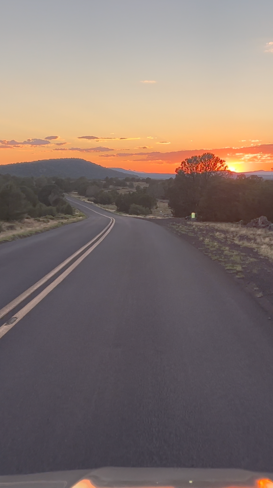
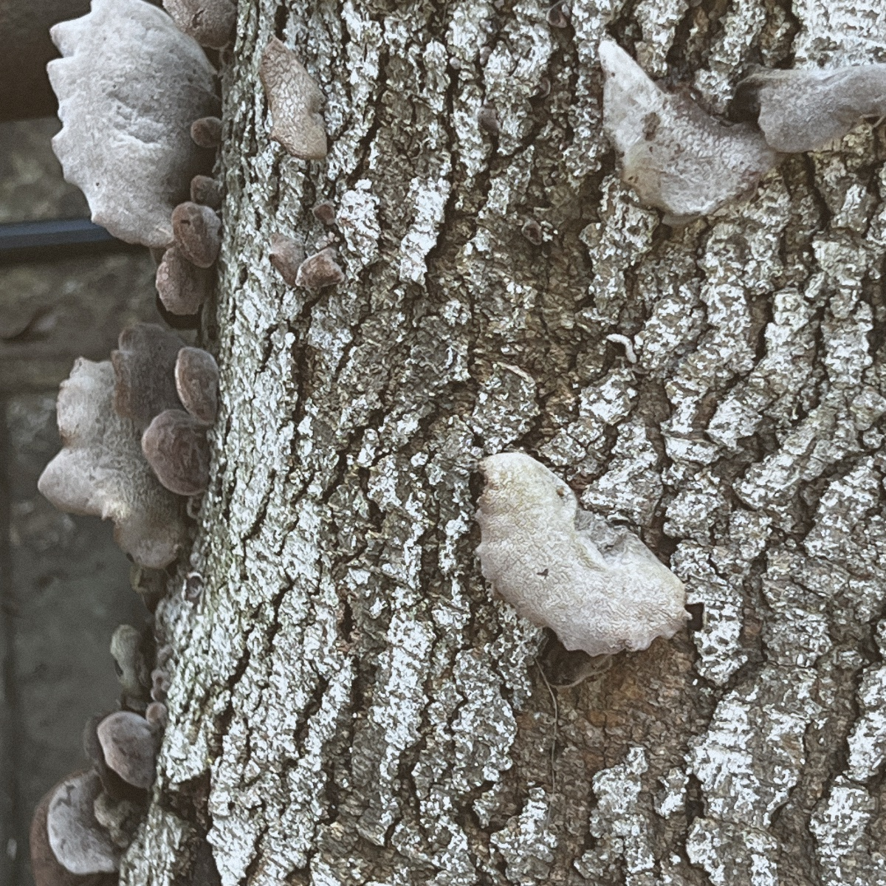
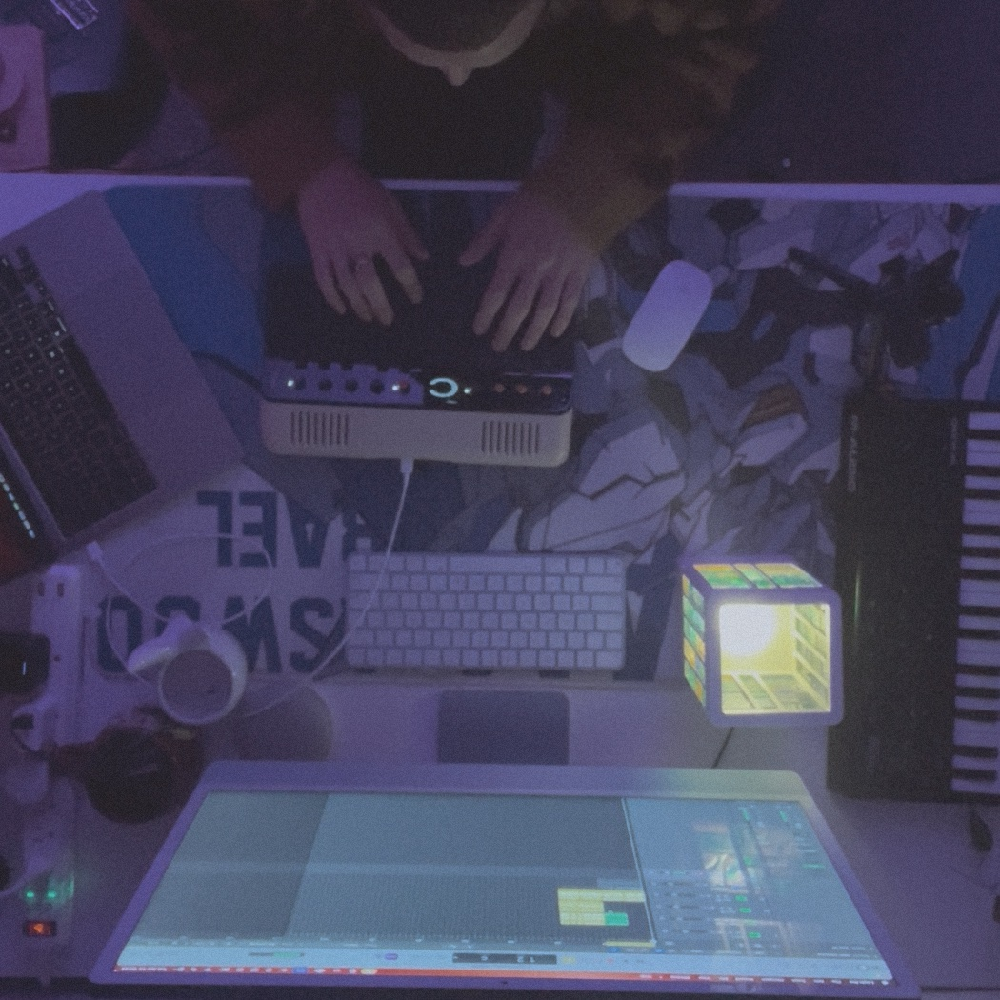
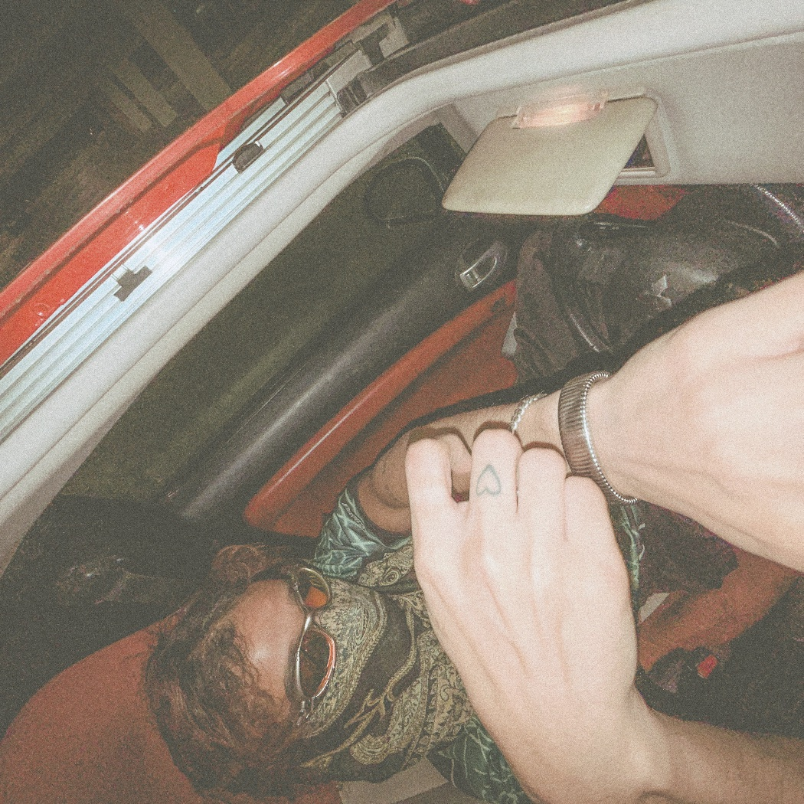

west of williams. the warm part of the sky only lasts a mile. 7:38 pm.
vr — 001the in-between hour, recorded.

vr–400 ▸ leadersongs held to tape until they keep their shape.
experimental analog music out of arizona.

untitled · in the studioit isn’t named here yet. tape first; titles later. when it can hold its own weight, you’ll hear it.
west of williams. the warm part of the sky only lasts a mile. 7:38 pm.
vr — 001
vr–400 ▸ 12alavender puts it into perspective.
vr — 001
vr–400 ▸ 22avr — 001
the river keeps the bend
even after we leave.
a note when there is something true to say. observations, not announcements.